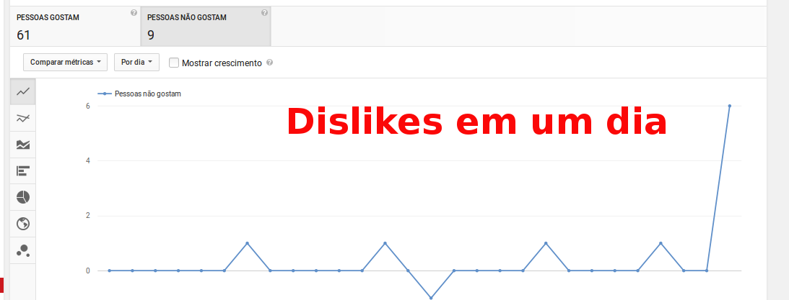
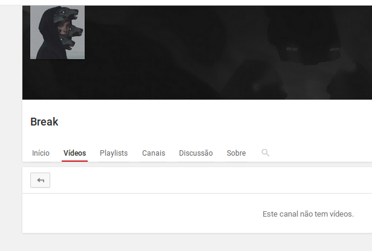
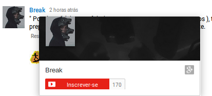
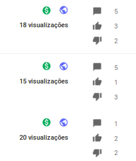

O Em Busca do Código é um site em formato de plataforma de ensino a distância (EAD), totalmente aberta e gratuita.
Aprendendo e ensinando, essa é a minha regra para mim.
Compre um adesivo do Em Busca do Código.
Publicidade
Publicidade
Não aprendi nada, ele é um bosta que não consegue viver sem mim, não consegue me ignorar, ou é um concorrente que não confia no seu próprio trabalho.
Gabriel Goffi é um especialista em alta performance que acompanho a uns meses, e quando percebi que essa pessoa inseriu 6 dislikes em um dia e um dislike dois dias antes eu percebi que encontrei meu primeiro hater.
Publicidade
Conversei com ele umas quatro vezes com essa duração de menos de dois anos do Em Busca do Código, sempre meio agressivo e provocando e eu sempre educado. Até o dia que no segundo dia consecutivo dele comentando coisas que não são relacionadas ao conteúdo da videoaula.
Nos comentários antes do vídeo 3 de JavaScript (cujo ele já apagou) ele criticava o áudio, o vídeo, meu jeito de falar. Então entendo que ele não gosta da existência do Em Busca do Código, só que temos um problema aí.
Então o que fazer? Nada.
Se ele me der 7 dislikes por semana no final do ano eu terei 365 visualizações a mais em meus vídeos. E mesmo assim o número de likes do canal do Em Busca do Código será maior.
Esse meu primeiro hater é uma pessoa acomodada, é cômodo para ele dar play em um vídeo meu e dar dislikes.
Eu recebo criticas construtivas sempre, o meu vídeo número 100 de HTML5 e CSS3 eu peço desculpas no inicio, porque uns dias antes de grava-lo eu recebi uma critica construtiva sobre um artigo que tinha escrito.
O especialista em performance Gabriel Goffi diz para nós amarmos haters, eu amo minha mãe e o Em Busca do Código. Para mim haters são uns merdas que não conseguem lidar com a realidade atual pós conhecimento.
Não, ele está atacando o Em Busca do Código. Ele não consegue viver sem o Em Busca do Código, ele não consegue viver sem mim.
Pior ainda se for concorrente, se for um concorrente fazendo isso é porque ele não confia no trabalho dele.
Eu amo o Em Busca do Código e estou fazendo acontecer todos os dias, de domingo a domingo, ser alguém que faz a diferença para outras pessoas. Isso um hater não consegue entender, tudo tem um motivo.
E o motivo de qualquer hater é aparecer.
O Gabriel Goffi fala de uma realidade pós conhecimento, um hater é uma pessoa frustrada, ele tem problemas na vida dele que eu não tenho nem noção do que sejam. Ele pode pode ser rico pode ser pobre. Ele pode ser qualquer um, ele pode ser qualquer merdinha de pessoa.
Como qualquer pessoa ele só quer ser lembrado, e dando dislikes ele sabe que será lembrado. Se ele não mudar o caminho dele ele será sempre lembrado por ser um bosta.
A cada dislike que ele da, eu sei que ele não consegue viver sem mim. Eu sei que ele vai ler / leu cada caractere desse artigo. E se você é o meu hater, me ignore para o bem da sua auto estima, porque a minha está em alta.
Eu me olho no espelho e me acho lindo, não lembro de hater nenhum, mas sei que existe alguém que não consegue viver sem mim.
Eu até respondi um comentário dele falando que era para ele aprender JavaScript em outro lugar, e em outro comentário que ele apagou falei que agora não teremos curso de PHP (comentário esse que ele apagou), mas ele não consegue e preferiu se acomodar me dando dislikes admitindo que não consegue viver sem mim.
E aqui termino com o comentário que fiz em meu vídeo 3 depois que ele me deu os dislikes.
Para quem ainda não sabe para na hora que estava preparando este vídeo meu pc travou algumas vezes, e a primeira quando estava tudo pronto (no Scratchpad), em outras palavras, precisei preparar esta videoaula mais de 3 vezes. Fora as fontes que mesmo linkando apenas duas, existem mais relacionadas a vídeos que ainda serão publicados. Gravo o áudio das videoaulas atualmente em um LG E415f o mais próximo possível do meu rosto porque não tenho headphone. Neste vídeo o kdenlive também travou e não renderiza, foram mais algumas horas só de problemas com o editor de vídeo. Não tenho outro PC ou notebook para gravar os vídeos. Então se realmente achar que este curso não é bom o suficiente, vá para outro canal. Somos livres, eu gosto de fazer isso e vou continuar fazendo.
Se estiver utilizando bloqueador de propaganda, por favor, coloque este site na lista branca (isto sempre será apenas um pedido). Obrigado pela escolha.